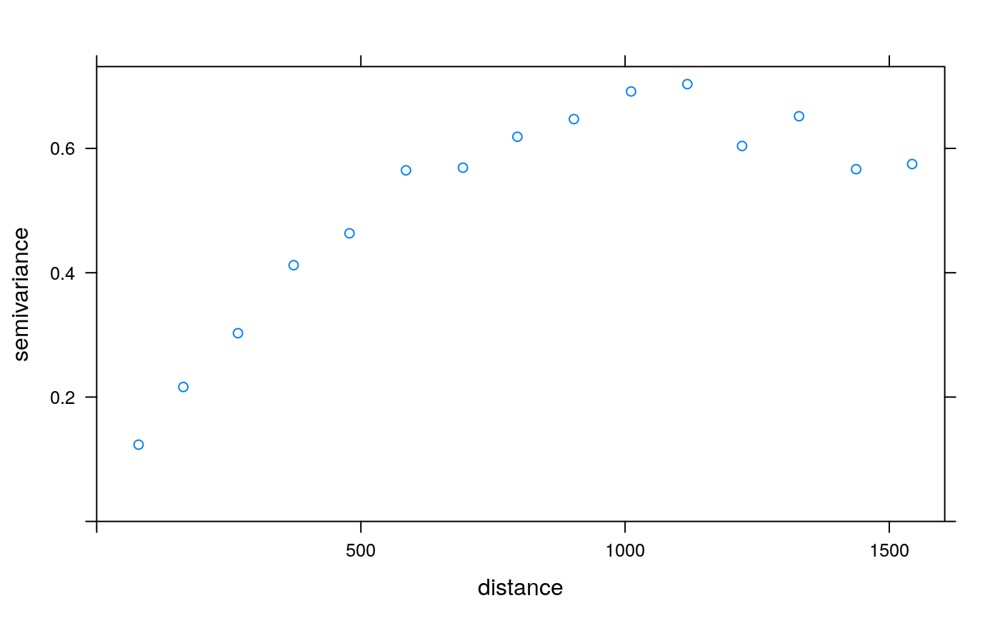
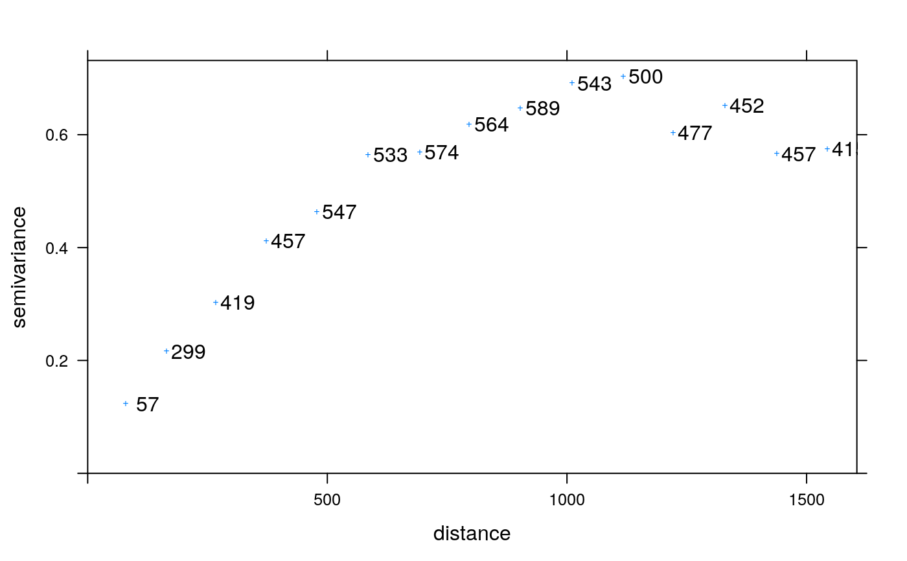
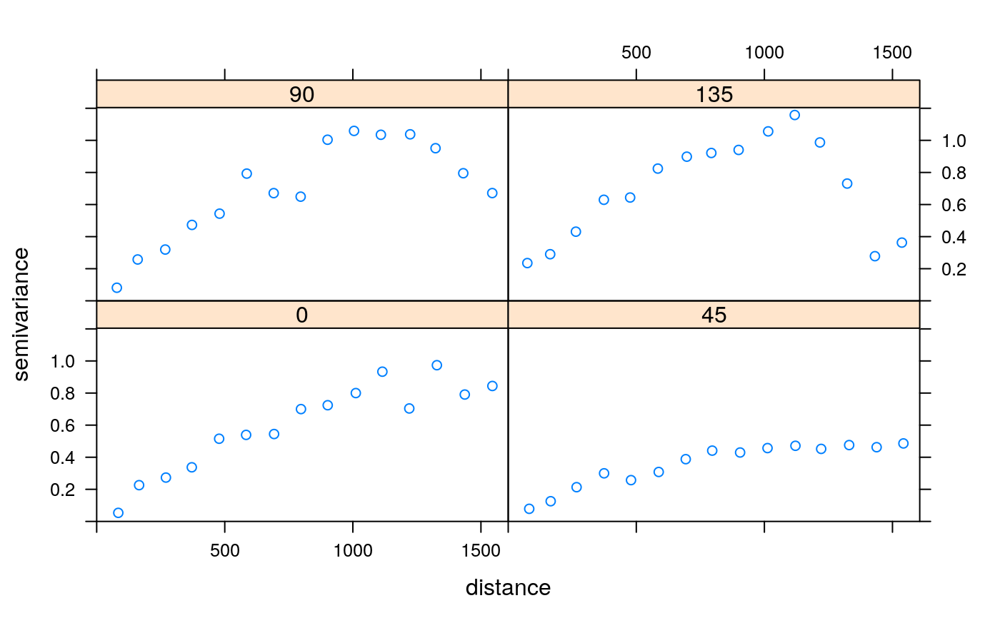
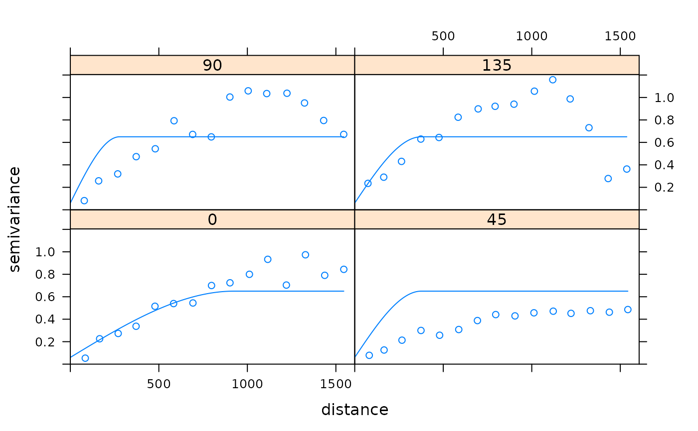
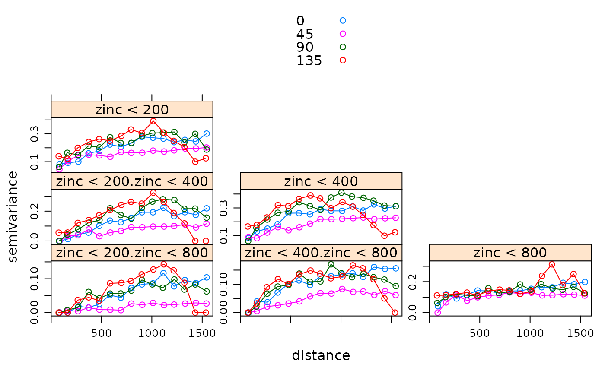
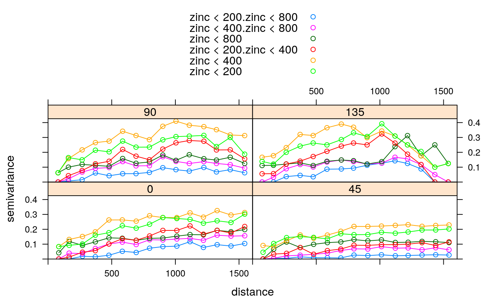
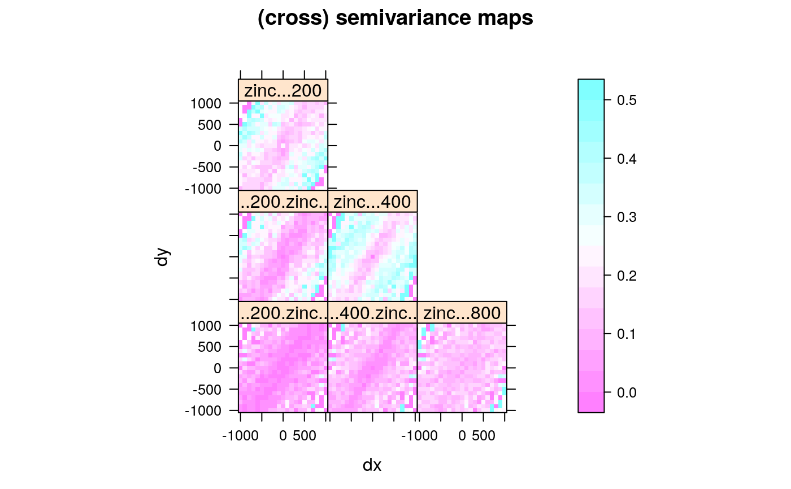
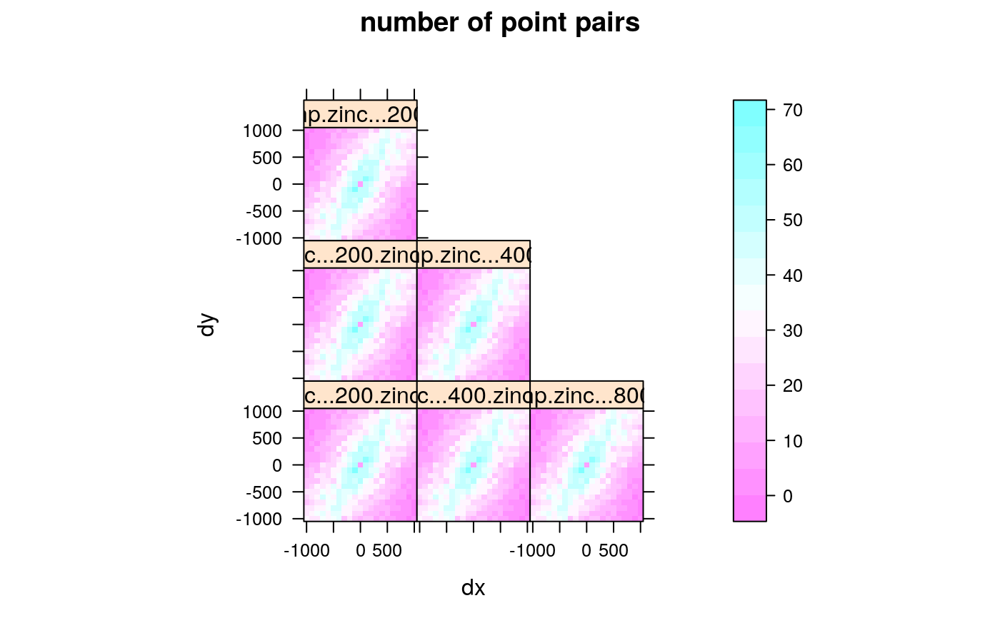

Plot a sample variogram, and possibly a fitted model
plot.gstatVariogram.RdCreates a variogram plot
# S3 method for gstatVariogram plot(x, model = NULL, ylim, xlim, xlab = "distance", ylab = attr(x, "what"), panel = vgm.panel.xyplot, multipanel = TRUE, plot.numbers = FALSE, scales, ids = x$id, group.id = TRUE, skip, layout, ...) # S3 method for variogramMap plot(x, np = FALSE, skip, threshold, ...) # S3 method for StVariogram plot(x, model = NULL, ..., col = bpy.colors(), xlab, ylab, map = TRUE, convertMonths = FALSE, as.table = TRUE, wireframe = FALSE, diff = FALSE, all = FALSE)
Arguments
| x | object obtained from the method variogram, possibly containing directional or cross variograms, space-time variograms and variogram model information |
|---|---|
| model | in case of a single variogram: a variogram model, as obtained from vgm or fit.variogram, to be drawn as a line in the variogram plot; in case of a set of variograms and cross variograms: a list with variogram models; in the spatio-temporal case, a single or a list of spatio-temporal models that will be plotted next to each other for visual comparison. |
| ylim | numeric; vector of length 2, limits of the y-axis |
| xlim | numeric; vector of length 2, limits of the x-axis |
| xlab | character; x-axis label |
| ylab | character; y-axis label |
| panel | panel function |
| multipanel | logical; if TRUE, directional variograms are plotted in different panels, if FALSE, directional variograms are plotted in the same graph, using color, colored lines and symbols to distinguish them |
| plot.numbers | logical or numeric; if TRUE, plot number of point pairs next to each plotted semivariance symbol, if FALSE these are omitted. If numeric, TRUE is assumed and the value is passed as the relative distance to be used between symbols and numeric text values (default 0.03). |
| scales | optional argument that will be passed to |
| ids | ids of the data variables and variable pairs |
| group.id | logical; control for directional multivariate variograms: if TRUE, panels divide direction and colors indicate variables (ids), if FALSE panels divide variables/variable pairs and colors indicate direction |
| skip | logical; can be used to arrange panels, see |
| layout | integer vector; can be used to set panel layout: c(ncol,nrow) |
| np | logical (only for plotting variogram maps); if TRUE, plot number of point pairs, if FALSE plot semivariances |
| threshold | semivariogram map values based on fewer point pairs than threshold will not be plotted |
| … | any arguments that will be passed to the panel plotting functions
(such as |
| col | colors to use |
| map | logical; if TRUE, plot space-time variogram map |
| convertMonths | logical; if TRUE, |
| as.table | controls the plotting order for multiple panels, see |
| wireframe | logical; if TRUE, produce a wireframe plot |
| diff | logical; if TRUE, plot difference between model and sample variogram; ignores |
| all | logical; if TRUE, plot sample and model variogram(s) in single wireframes. |
Value
returns (or plots) the variogram plot
Details
Please note that in the spatio-temporal case the levelplot and wireframe plots use the spatial distances averaged for each time lag avgDist. For strongly varying spatial locations over time, please check the distance columns dist and avgDist of the spatio-temporal sample variogram. The lattice::cloud function is one option to plot irregular 3D data.
References
Note
currently, plotting models and/or point pair numbers is not supported when a variogram is both directional and multivariable; also, three-dimensional directional variograms will probably not be displayed correctly.
See also
Examples
plot(vgm1, plot.numbers = TRUE, pch = "+")# the following demonstrates plotting of directional models: model.2 <- vgm(.59,"Sph",926,.06,anis=c(0,0.3)) plot(vgm2, model=model.2)g = gstat(NULL, "zinc < 200", I(zinc<200)~1, meuse) g = gstat(g, "zinc < 400", I(zinc<400)~1, meuse) g = gstat(g, "zinc < 800", I(zinc<800)~1, meuse) # calculate multivariable, directional variogram: v = variogram(g, alpha=c(0,45,90,135)) plot(v, group.id = FALSE, auto.key = TRUE) # id and id pairs panelsplot(v, group.id = TRUE, auto.key = TRUE) # direction panels# variogram maps: plot(variogram(g, cutoff=1000, width=100, map=TRUE), main = "(cross) semivariance maps")